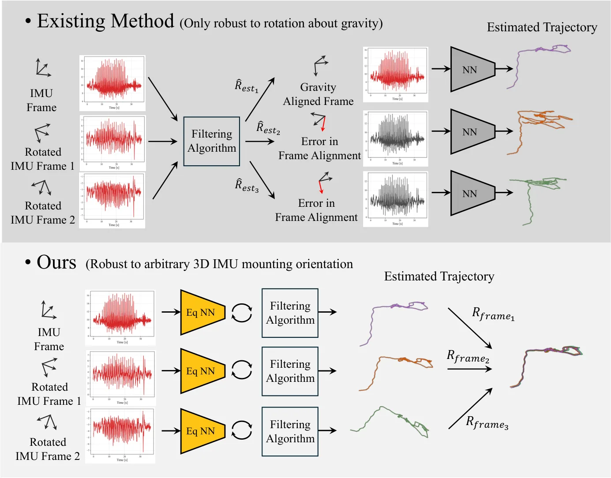
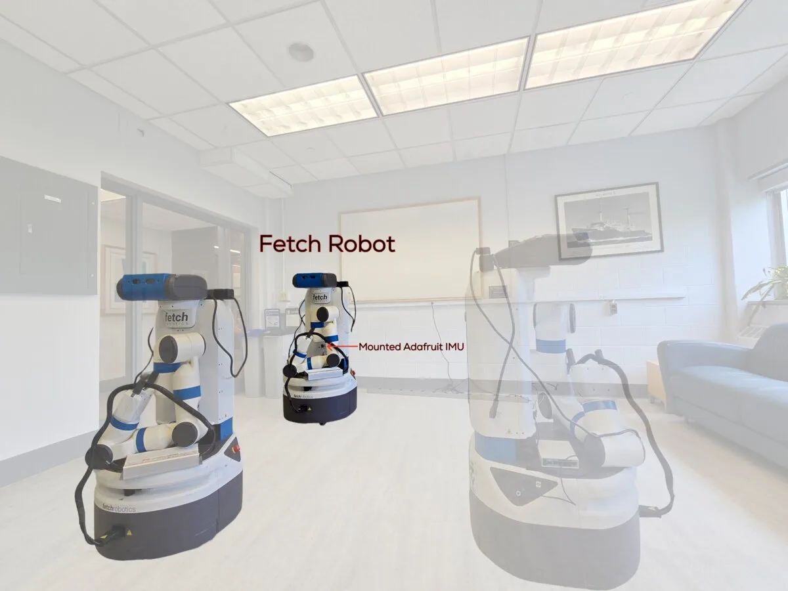
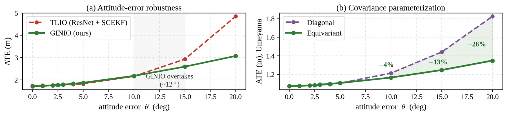
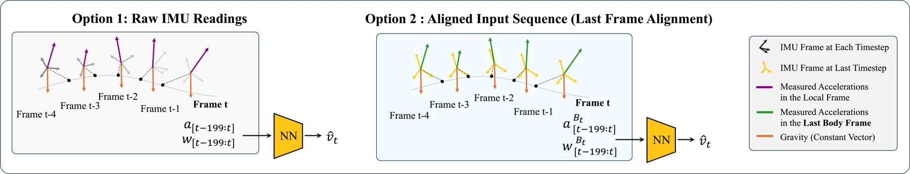
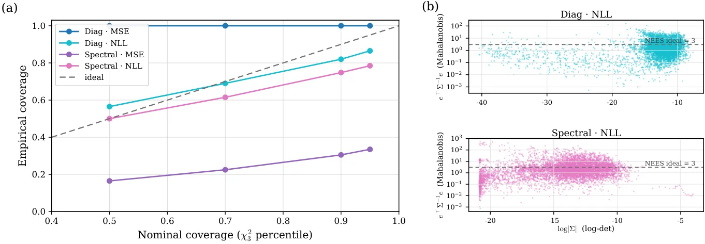

GINIO：面向神经惯性里程计的几何 SO(3) 等变接口
GINIO: A Geometric SO(3)-Equivariant Interface for Neural Inertial Odometry
把学习到的惯性测量当作要满足几何变换律的物理量：均值按向量、协方差按张量旋转，再配合末帧对齐与滤波器耦合，使同一运动在任意 IMU 安装坐标系下输出一致的速度与不确定性。
TLIO ID/SO(3) ATE
Fetch unseen remount ATE
parameters
作者、单位与技术谱系 · Research context
作者与单位
研究脉络
- EqNIO（重力稳定子群等变）方法上游关系：把 O_g(3)/O(2) 子群等变推进为完整 SO(3) 等变[arXiv 官方 HTML v1]
- AirIO（body-frame 表示与姿态线索）方法上游关系：沿用其 body-frame 输入约定并加等变约束[arXiv 官方 HTML v1]
- TLIO 式 SCEKF 滤波耦合协议方法基座关系：沿用其量测更新协议与 RTE 定义[arXiv 官方 HTML v1]
- 末帧对齐与谱协方差本篇推进关系：在等变骨干上新增坐标无关的不确定性接口[arXiv 官方 HTML v1]
合作网络
- Chankyo Kim、Minghan Zhu、Tzu-Yuan Lin、Avantika Rattan、Maani Ghaffari五位作者 → University of Michigan关系：共同署名/作者单位[arXiv 官方 HTML v1]
- GINIO-E 实例GINIO → EqNIO 式 full-SO(3) canonicalization 设计关系：技术对照/实例化依赖[arXiv 官方 HTML v1]
- NanoBench 与 Fetch 硬件平台GINIO → Crazyflie 2.1 / Fetch + Adafruit BNO055关系：公开实验依赖[arXiv 官方 HTML v1]
作者、单位与会议标注是原文事实；技术接续来自论文的相关工作与对照表；未发现公开合作边之外的信息，也不据此推断导师或师生关系。
方法本质拆解 · What actually changed
是预训练微调还是结构替换？
论文的做法是用等变算子替换标准时序层并训练该等价变骨干（GINIO-RD/RS 为 0.57M/0.80M 参数，对照非等变 ResNet1D 为 5.43M），作者明确把参数效率归因于等变层的结构性共享，而不是剪枝或事后压缩；因此这不是在非等变权重上做 LoRA 式微调。单个实例的训练轮数与调度在附录给出，正文未列全。
加了什么约束？
核心约束是把输出绑定到 SO(3) 变换律：运动按向量旋转、协方差按 RΣRᵀ 合同变换；谱协方差用等变标架 V 与不变 log 标准差实现该律，并加 SO(3) 不变的非退化正则项。LFA 把窗口约束到末帧传感器系（相对旋转 R_{n,k}），作用变量是学习型运动量与协方差，不是对位姿施加硬几何约束。
推理/后端做了什么？
滤波器用原始 IMU 传播并估计 bias 等局部状态，网络消费对应去偏窗口输出 (m̂, Σ̂) 作为量测更新；世界系变体用姿态估计把输出旋转到世界系，传感器系变体需要连接估计器提供 LFA 所需的相对旋转。后端仍是 SCEKF 或 InEKF（按基线协议选择），论文没有引入新的全局 BA 或因子图。
方法本质是什么？
本质是让学习型惯性测量像物理量一样变换，把“IMU 安装坐标系变化”从模型分布偏移转成模型自带的对称性；LFA 用末帧相对坐标降低窗口内旋转非平稳，谱协方差让不确定性按张量传播，于是下游滤波器的大小与方向权重在坐标系变化下保持几何一致。
输入去偏 IMU 窗口 + SO(3) 等变算子与谱协方差约束 + 末帧对齐/滤波器融合 → 任意安装坐标系下输出一致的速度量测与协方差。

动机与问题Motivation
动机与问题
主流 NIO（RIDI/RoNIN/TLIO 一类）靠把 IMU 数据旋转到重力对齐系来消除安装敏感性，但这引入一个特权竖直轴，并把学习分布耦合到外部姿态估计；在航拍等动态场景中 body-frame 信息与快速姿态变化本身是有效信息而非干扰。安装改变对已标定 IMU 向量等价于施加一个 SO(3) 旋转，若网络不满足该对称性，同一物理运动会得到不同预测，滤波器因此收到不一致的量测。
方法Method
方法总览
接口写作 G_θ(IMU 窗口)=(m̂, Σ̂)，要求 G_θ(ρ(R)Z)=(Rm̂, RΣ̂Rᵀ)。四个组件：SO(3) 等变时序骨干；坐标无关的谱协方差头；Last-Frame Alignment 预处理；滤波器耦合融合（世界系用 SCEKF、传感器系用 InEKF）。同一接口实例化为 GINIO-W/S（滤波器耦合）、GINIO-A（AirIO 式循环）、GINIO-E（EqNIO 式 full-SO(3) canonicalization）以及 GINIO-RD/RS（ResNet 式时序，对角/谱协方差）。
关键技术细节
等变处理只用标量权重：通道混合 Y(t,c)=Σ_c′ w_cc′ X(t,c′) 与时间卷积 Z(t,c)=Σ_τ,c′ k_τcc′ Y(t−τ,c′)，权重在时间与通道维上共享、不对几何 R³ 维做任意 3×3 混合，因此与 SO(3) 作用交换，也解释了参数效率来自结构共享而非剪枝。非线性由范数/内积得到的旋转不变标量门与叉积向量交互实现。谱协方差头从一个等变标架 V∈SO(3)（三向量经 SVD 极投影并做行列式修正）与不变 log 标准差 λ_i 构造 Σ̂=V diag(e^{2λ_i}) Vᵀ，天然 SPD 且满足合同律，另加 SO(3) 不变的非退化正则项维持 AᵀA 满秩。LFA 把窗口表达在末帧传感器系：R_{n,k}=(^w_sR_n)ᵀ ^w_sR_k，z^{lfa}_k=ρ(R_{n,k})z^s_k；Proposition 1 证明等变预测器下 LFA 与世界系训练等价（附录给出证明）。

实验Experiments
实验设置
数据集：TLIO 与 RIDI（人体运动，标准划分）、NanoBench（真实 Crazyflie 2.1 飞行，17 条测试序列，Vicon 真值、原始 IMU、板上估计器输出与激进机动，作为 NN-only 航拍基准）、作者自采 Fetch 物理重装数据集（Adafruit BNO055，标称安装训练，两个未见 90° 重装共 46 条序列，轮式里程计作参考），AquaticVision 在附录报告。指标：滤波器耦合轨迹用 ATE[m]（另报 RTE 与 drift ratio）、NanoBench 用 ATE[m]、扰动诊断用速度 RMSE[m/s]。对照：ResNet+SCEKF（TLIO 协议）、EqNIO、SO(3) 增强变体、AirIO（有/无姿态）、ResNet1D、EqNIO O(2)、IMUNet。协议：世界系用 SCEKF 匹配基线，传感器系用 LFA+InEKF；ID/SO(3) 测试对加速度与角速度通道施加同一随机 R，向量目标同 R 旋转、协方差目标按 RΣRᵀ 变换，预测先逆旋转再评估，所有方法用同一批采样的旋转。
实验数字与比较
TLIO：GINIO-W ID/ID 1.615 m、ID/SO(3) 2.018 m，对照 EqNIO 为 1.554 m→76.389 m，ResNet+SCEKF 为 1.725 m→35.699 m（加 SO(3) 增强后 8.687 m）；参数量 0.57M/17.81M FLOPs 对 EqNIO 6.02M/206.78M（以上均取自正文表 1）。RIDI：GINIO-W 0.952 m（ID/ID）与 2.450 m（ID/SO(3)）为世界系最优，传感器系 GINIO-S 为 1.319 m 与 1.457 m。NanoBench：AirIO(no-att.) 5.579 m→GINIO-A(no-att.) 1.430 m，参数 0.045M 对 AirIO 0.33M；有姿态时 1.205 m→1.045 m；时序系 GINIO-RD 0.581 m，对 ResNet1D 0.645 m、EqNIO O(2) 0.828 m（表 2）。Fetch 物理重装：非等变 ResNet 未见重装 ATE 8.151 m、nATE 226.6%，GINIO-R 降到 0.495 m、nATE 14.0%（16.5× 改善），标称 0.105 m→0.095 m（表 3）。NN-only RIDI 对照 IMUNet：GINIO 0.927 m 对 1.43 m。谱协方差把协方差等变误差降低三个数量级以上，并降低速度 RMSE。
消融/失败边界
控制消融（TLIO）：非等变 ResNet 在 ID/SO(3) 下从 1.817 m 恶化到 108.235 m，SO(3) 训练增强降到 3.189 m 仍不如结构等变的 1.828 m；同一 InEKF 后端下非等变 ResNet-S 从 2.814 m 退化到 36.593 m，而 GINIO-S 保持 2.704 m→2.759 m，说明鲁棒性不是滤波器造成的。LFA 消融支持世界系—LFA 等价：无滤波器的受控设置中二者均为 1.828 m。协方差消融：把谱协方差换成对角头后，名义 95% 覆盖率反而更接近 0.95，但张量律误差显著变大、在 20° 帧误差下 ATE 为 1.826 m 对谱头的 1.349 m（NEES 侧则谱头更接近理想值 3），因此论文不主张谱头名义精度更优。失败边界：LFA 依赖连接估计器提供的相对旋转，帧估计误差被注入到预处理坐标系时（3°→20°）GINIO-R 在 NanoBench 上 ATE 增加 +0.03 m，而 EqNIO O(2) 为 +0.25 m，说明退化变缓但没有消失。
局限与迁移Limitations & Transfer
局限与待核验
作者明确承认：精确等变只对已标定、去偏的向量测量成立，物理重装引入的偏置漂移、尺度/非正交误差、杆臂效应、振动与时间戳偏差都在保证之外，必须由标定或连接估计器处理；LFA 依赖相对姿态估计，严重损坏的相对旋转会让传感器系表示退化；Fetch 实验用轮式里程计作参考且轨迹按安装分别独立采集，只能证明未见重装的鲁棒性，不是同轨迹可重复性测试。待核验：附录中的完整 RTE、drift ratio 与 AquaticVision 表；跨 IMU 硬件（论文附录提到多平台 IMU 硬件差异表）的泛化；以及“承诺在发表后释放”的代码、评测脚本与处理后基准划分目前尚不可获取。
与你研究路线的关系
可迁移模块是把等变学习型量测、张量一致协方差与相对坐标窗口（LFA）合成一个接口约定：它可以直接替换 PPP/INS 或 VIO 观测更新中的学习型速度/位移量测，让残差权重随坐标系与杆臂变化一致传播。下一步实验：在同一滤波后端固定不变的前提下比较对角协方差、谱协方差与无额外协方差三种配置，在传感器重装或坐标系约定变化下同时报告 ATE、NEES、95% 覆盖率与更新次数；再检验把 LFA 的相对帧思想用到 GNSS 多天线/杆臂变化的姿态预处理时，是否也能把重装类分布偏移变成等变对称。
{kind=link}

{kind=link}

{kind=link}

{kind=link}
